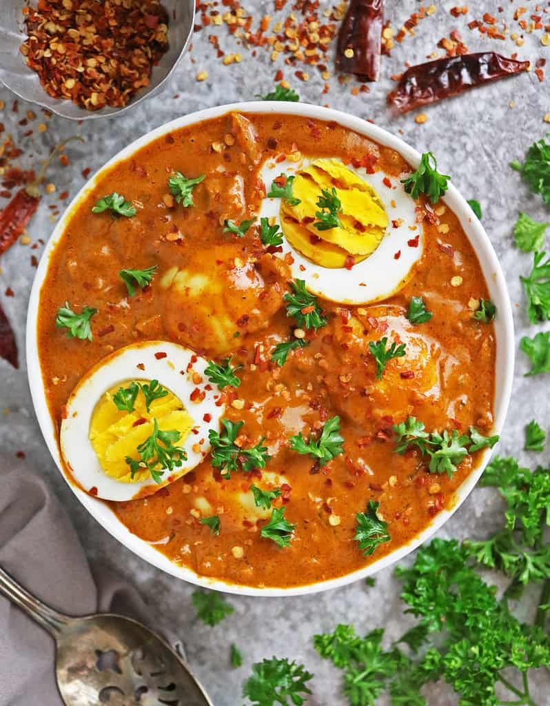

Egg Gravy
⭐⭐⭐⭐⭐ 4.8 Rating | ⏱ 40 Minutes | 🍽 4 Servings
Category
Lunch / Dinner
Difficulty
Easy
Calories
320 kcal
Cooking Style
Indian Curry
📋 Ingredients
- 6 Boiled Eggs
- 2 Onions (Finely Chopped)
- 2 Tomatoes (Pureed)
- 2 Green Chillies
- 1 tbsp Ginger-Garlic Paste
- ½ tsp Turmeric Powder
- 1 tsp Red Chilli Powder
- 1 tsp Coriander Powder
- ½ tsp Garam Masala
- 1 tsp Cumin Seeds
- 2 tbsp Oil
- Salt to Taste
- Fresh Coriander Leaves
🍳 Required Utensils
- Cooking Pan
- Pressure Cooker (Optional)
- Knife
- Cutting Board
- Spatula
- Serving Bowl
📖 Introduction
Egg Gravy is a delicious Indian curry made with boiled eggs cooked in a spicy onion and tomato gravy. It pairs perfectly with chapati, naan, paratha, jeera rice, or plain steamed rice.
🔬 Principle
The curry is prepared by cooking onions, tomatoes, and aromatic spices until a thick masala forms. Boiled eggs absorb the flavors of the gravy, resulting in a rich and tasty dish.
👨🍳 Procedure
- Boil the eggs, remove the shells, and keep aside.
- Make small cuts on each boiled egg.
- Heat oil in a pan.
- Add cumin seeds and allow them to crackle.
- Add chopped onions and sauté until golden brown.
- Add ginger-garlic paste and cook for 2 minutes.
- Add tomato puree and cook until oil separates.
- Add turmeric, chilli powder, coriander powder, garam masala, and salt.
- Mix well and cook for 5 minutes.
- Add one cup of water and bring to a boil.
- Add the boiled eggs carefully.
- Cook for another 8–10 minutes on low flame.
- Garnish with fresh coriander leaves.
- Serve hot.
⚠ Precautions
- Do not overcook the eggs.
- Cook the masala completely before adding water.
- Use fresh spices for better taste.
- Cook on medium flame.
- Add eggs gently to avoid breaking them.
💡 Chef Tips
- Lightly fry the boiled eggs before adding them to the gravy.
- Add fresh cream for a richer texture.
- Use kasuri methi for extra flavour.
- Serve with butter naan or jeera rice.
- Add a little lemon juice before serving.
🥗 Nutrition Facts
| Nutrient | Amount |
|---|---|
| Calories | 320 kcal |
| Protein | 18 g |
| Carbohydrates | 10 g |
| Fat | 22 g |
| Fiber | 3 g |
🍽 Serving Suggestions
- Serve with chapati.
- Enjoy with butter naan.
- Serve with steamed rice.
- Best with jeera rice.
- Pair with onion salad and pickle.
🌿 Health Benefits
- Excellent source of protein.
- Rich in Vitamin B12.
- Supports muscle growth.
- Provides healthy fats.
- Keeps you full for longer.
✅ Result
The prepared Egg Gravy should have soft boiled eggs coated in a rich, spicy, and flavorful onion-tomato gravy. It should be creamy, aromatic, and perfect to enjoy with Indian breads or rice.
🎥 Watch Recipe Video
Learn the complete recipe by watching the step-by-step video.
▶ Watch on YouTube